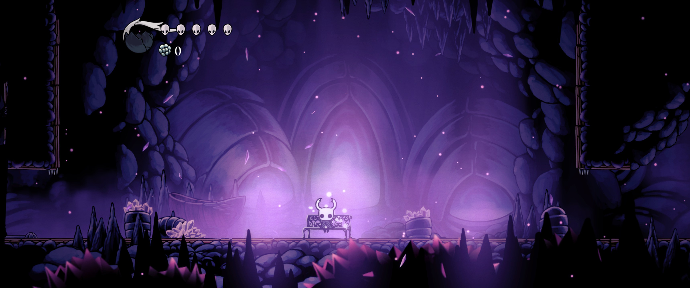
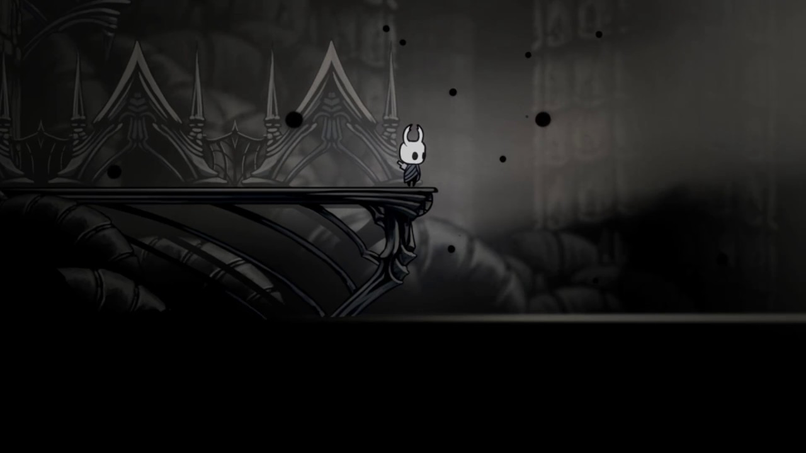

Sobre Mim


Primeiro Contato
Meu interesse por Hollow Knight se iniciou em 2019 quando joguei pela primeira vez e me apaixonei por sua história e ambientação. O estilo de gameplay também me encantou pelas lutas difíceis e desafiadoras que se encontram durante o jogo, sendo necessário várias tentativas ou até mesmo treinar para derrotar alguns chefes durante o jogo.

Linha da Vida
Durante a pandemia, joguei Hollow Knight novamente e esse foi um motivo de conexão com meus amigos durante essa época onde estávamos apenas em casa. Convenci eles a jogarem o jogo e todos os dias estávamos juntos em chamadas no discord jogando e falando sobre, momentos que me trazem nostalgia


Arte feita a mão
Cada detalhe de Hollow Knight foi cuidadosamente criado à mão, dando vida a um mundo que é tão belo quanto melancólico. Das vastas cavernas aos pequenos insetos que habitam Hallownest, tudo é pintado com um toque artesanal que transmite emoção e profundidade. Com animações fluidas e ambientes ricos em contraste, o jogo transforma cada cenário em uma obra de arte viva - um convite para admirar o silêncio e a beleza que se escondem na escuridão.
Abrace o Vazio
Nas profundezas de Hallownest, o vazio não é apenas escuridão - é essência, é poder, é destino. Ao longo de sua jornada, o cavaleiro descobre que enfrentar o vazio é também confrontar a si mesmo. Entre silêncio e sacrifício, a verdadeira força nasce da aceitação do que está perdido. Abrace o vazio… e torne-se parte daquilo que mantém o reino inteiro unido - e condenado.
